Creating a Blog
[[appendix_blog]] [appendix] [role=“Creating a blog”]
Unfortunately, when it comes to blogging, it seems like you have to make a difficult decision: either use a platform that makes it easy but subjects you and your readers to advertisements, paywalls, and fees, or spend hours setting up your own hosting service and weeks learning about all kinds of intricate details. Perhaps the biggest benefit to the “do-it-yourself” approach is that you really own your own posts, rather than being at the whim of a service provider and their decisions about how to monetize your content in the future.
It turns out, however, that you can have the best of both worlds!
Blogging with GitHub Pages
A great solution is to host your blog on a platform called GitHub Pages, which is free, has no ads or pay wall, and makes your data available in a standard way such that you can at any time move your blog to another host. But all the approaches I’ve seen to using GitHub Pages have required knowledge of the command line and arcane tools that only software developers are likely to be familiar with. For instance, GitHub’s own documentation on setting up a blog includes a long list of instructions that involve installing the Ruby programming language, using the git command-line tool, copying over version numbers, and more—17 steps in total!
To cut down the hassle, we’ve created an easy approach that allows you to use an entirely browser-based interface for all your blogging needs. You will be up and running with your new blog within about five minutes. It doesn’t cost anything, and you can easily add your own custom domain to it if you wish to. In this section, we’ll explain how to do it, using a template we’ve created called fast_template. (NB: be sure to check the book’s website for the latest blog recommendations, since new tools are always coming out).
Creating the Repository
You’ll need an account on GitHub, so head over there now and create an account if you don’t have one already. Make sure that you are logged in. Normally, GitHub is used by software developers for writing code, and they use a sophisticated command-line tool to work with it—but we’re going to show you an approach that doesn’t use the command line at all!
To get started, point your browser to https://github.com/fastai/fast_template/generate (you need to be logged in to GitHub for the link to work). This will allow you to create a place to store your blog, called a repository. You will a screen like the one in <.github.io.
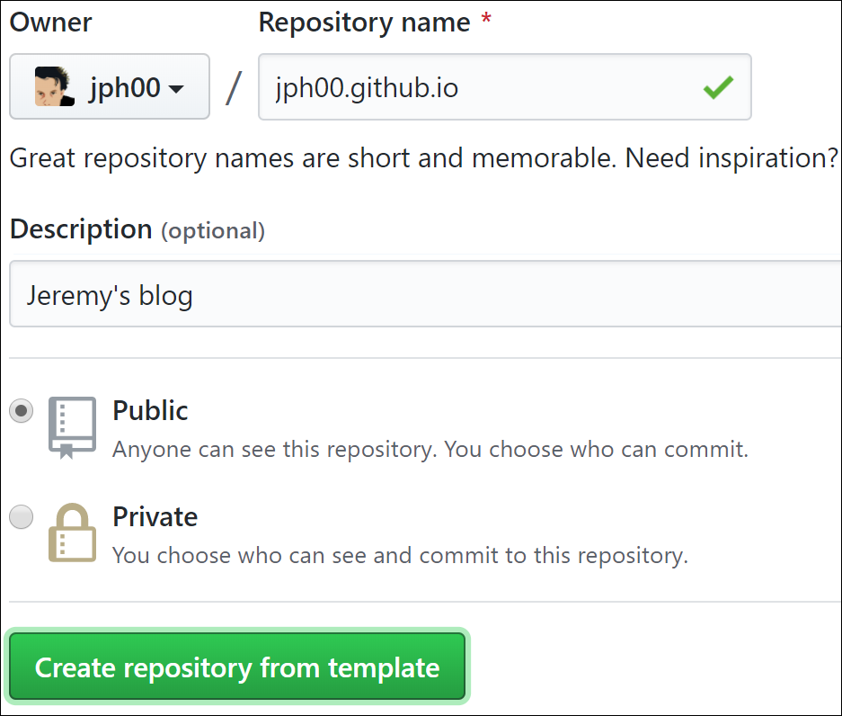
Once you’ve entered that, and any description you like, click “Create repository from template.” You have the choice to make the repository “private,” but since you are creating a blog that you want other people to read, having the underlying files publicly available hopefully won’t be a problem for you.
Now, let’s set up your home page!
Setting Up Your Home Page
When readers arrive at your blog the first thing that they will see is the content of a file called index.md. This is a markdown file. Markdown is a powerful yet simple way of creating formatted text, such as bullet points, italics, hyperlinks, and so forth. It is very widely used, including for all the formatting in Jupyter notebooks, nearly every part of the GitHub site, and many other places all over the internet. To create markdown text, you can just type in plain English, then add some special characters to add special behavior. For instance, if you type a * character before and after a word or phrase, that will put it in italics. Let’s try it now.
To open the file, click its filename in GitHub. To edit it, click on the pencil icon at the far right hand side of the screen as shown in <
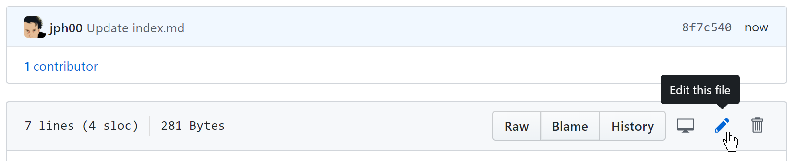
You can add to, edit, or replace the texts that you see. Click “Preview changes” (<
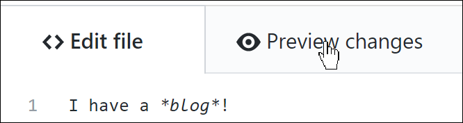
To save your changes, scroll to the bottom of the page and click “Commit changes,” as shown in <
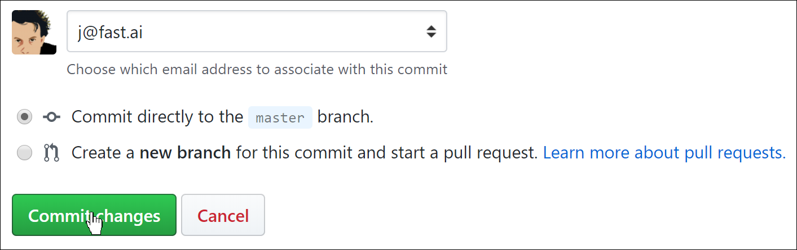
Next, you should configure your blog’s settings. To do so, click on the file called _config.yml, then click the edit button like you did for the index file. Change the title, description, and GitHub username values (see <
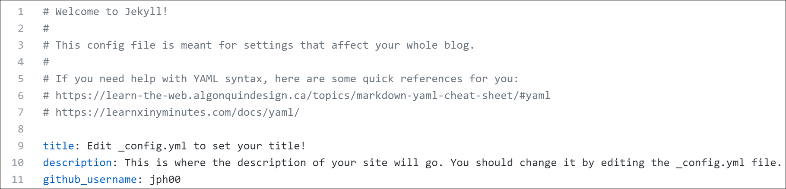
After you’re done, commit your changes just like you did with the index file, then wait a minute or so while GitHub processes your new blog. Point your web browser to <username> .github.io (replacing <username> with your GitHub username). You should see your blog, which will look something like <
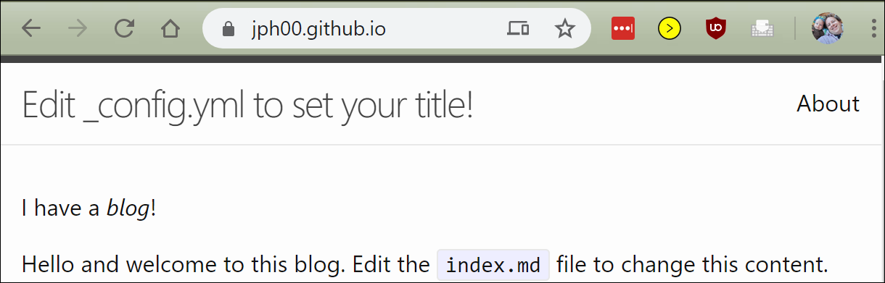
Creating Posts
Now you’re ready to create your first post. All your posts will go in the _posts folder. Click on that now, and then click the “Create file” button. You need to be careful to name your file using the format <year>-<month>-<day>-<name>.md, as shown in <
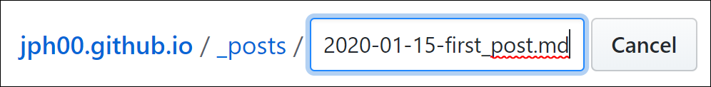
You can then type the contents of your first post. The only rule is that the first line of your post must be a markdown heading. This is created by putting # at the start of a line, as shown in <##, level 3 with ###, and so forth).
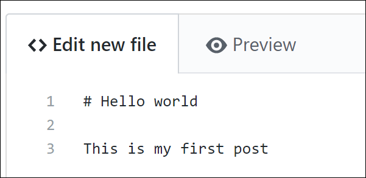
As before, you can click the “Preview” button to see how your markdown formatting will look (<
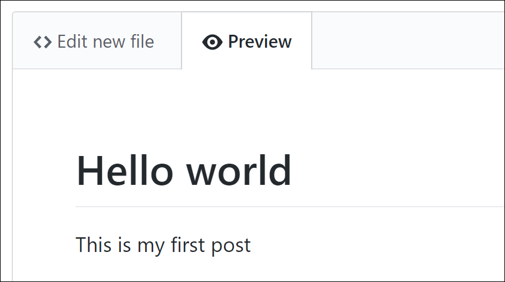
And you will need to click the “Commit new file” button to save it to GitHub, as shown in <
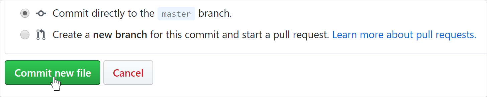
Have a look at your blog home page again, and you will see that this post has now appeared–<
You may have noticed that we provided a sample blog post, which you can go ahead and delete now. Go to your _posts folder, as before, and click on 2020-01-14-welcome.md. Then click the trash icon on the far right, as shown in <
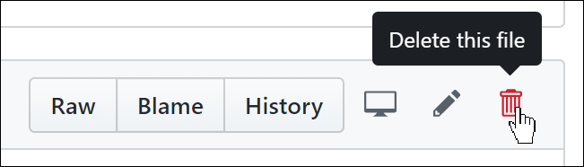
In GitHub, nothing actually changes until you commit—including when you delete a file! So, after you click the trash icon, scroll down to the bottom of the page and commit your changes.
You can include images in your posts by adding a line of markdown like the following:
For this to work, you will need to put the image inside your images folder. To do this, click the images folder, them click “Upload files” button (<
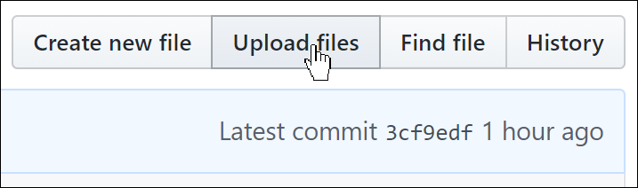
Now let’s see how to do all of this directly from your computer.
Synchronizing GitHub and Your Computer
There are lots of reasons you might want to copy your blog content from GitHub to your computer–you might want to be able to read or edit your posts offline, or maybe you’d like a backup in case something happens to your GitHub repository.
GitHub does more than just let you copy your repository to your computer; it lets you synchronize it with your computer. That means you can make changes on GitHub, and they’ll copy over to your computer, and you can make changes on your computer, and they’ll copy over to GitHub. You can even let other people access and modify your blog, and their changes and your changes will be automatically combined together the next time you sync.
To make this work, you have to install an application called GitHub Desktop on your computer. It runs on Mac, Windows, and Linux. Follow the directions to install it, and when you run it it’ll ask you to log in to GitHub and select the repository to sync. Click “Clone a repository from the Internet,” as shown in <
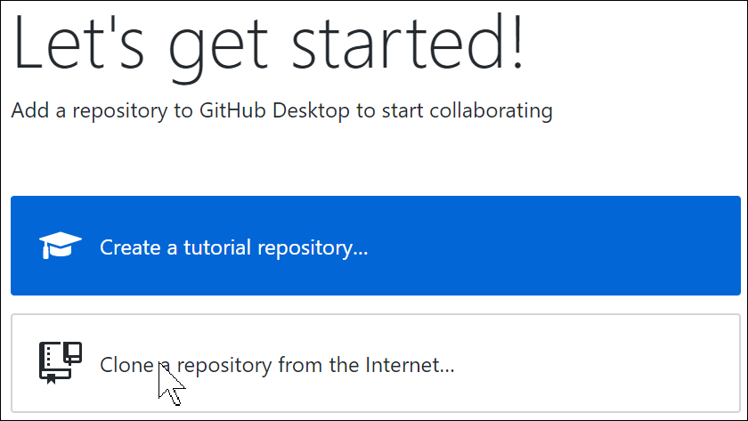
Once GitHub has finished syncing your repo, you’ll be able to click “View the files of your repository in Explorer” (or Finder), as shown in <
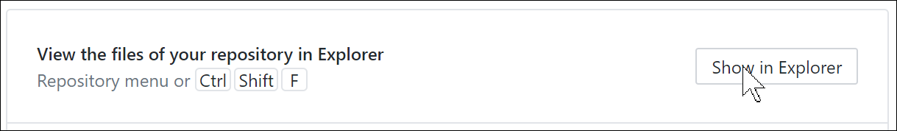
If you haven’t used git before, GitHub Desktop is a great way to get started. As you’ll discover, it’s a fundamental tool used by most data scientists. Another tool that we hope you now love is Jupyter Notebooks–and there’s a way to write your blog directly with that too!
Jupyter for Blogging
You can also write blog posts using Jupyter notebooks. Your markdown cells, code cells, and all the outputs will appear in your exported blog post. The best way to do this may have changed by the time you are reading this book, so be sure to check out the book’s website for the latest information. As we write this, the easiest way to create a blog from notebooks is to use fastpages, which is a more advanced version of fast_template.
To blog with a notebook, just pop it in the _notebooks folder in your blog repo, and it will appear in your list of blog posts. When you write your notebook, write whatever you want your audience to see. Since most writing platforms make it hard to include code and outputs, many of us are in the habit of including fewer real examples than we should. This is a great way to instead get into the habit of including lots of examples as you write.
Often, you’ll want to hide boilerplate such as import statements. You can add #hide to the top of any cell to make it not show up in output. Jupyter displays the result of the last line of a cell, so there’s no need to include print(). (Including extra code that isn’t needed means there’s more cognitive overhead for the reader; so don’t include code that you don’t really need!)